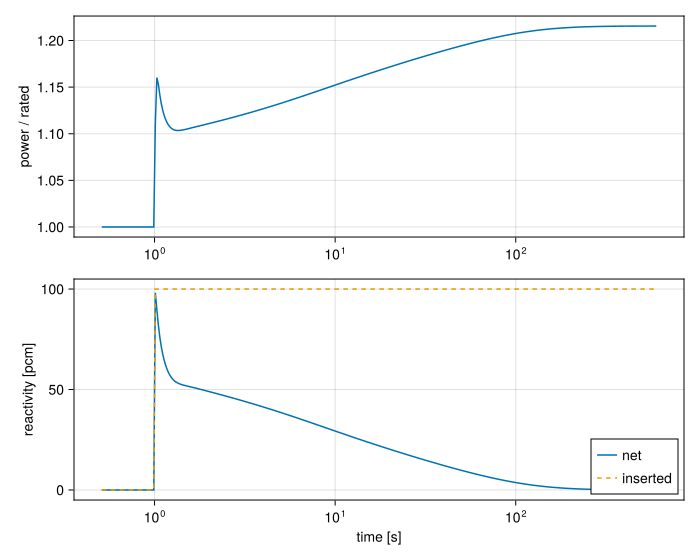

Reactivity insertion with feedback
Download this tutorial as a Julia script or a Jupyter notebook.
A reactor's power is not an input: it follows the reactivity, and the reactivity follows the temperatures of the fuel and coolant. This tutorial couples the fuel plate of A fuel plate between two channels to the point kinetics equations, inserts a step of reactivity, and watches the temperature feedback bring the reactor back to critical at a higher power.
The physics is in Point kinetics and feedback.
The thermal-hydraulic model
The unit cell is the one from A fuel plate between two channels: a plate cooled on both faces by one channel, with the flow held fixed. A function builds it, so it can be built twice.
using STREAMusing STREAM.Components: Pump, HeatExchanger, HeatDiffusion, ChannelAndContacts, PointKineticsusing STREAM.Assemblies: inseries, symmetric_plate, temperature_feedbackusing STREAM.Utilities: cosine_shapeusing ModelingToolkit: @named, mtkcompileusing OrdinaryDiffEq: BrownFullBasicInitL, n, nx = 0.6, 20, 4P_rated = 2.5e4 # plate power [W]geometry = PipeGeometry_rectangular(L, 0.067, 0.0024, 0.063)shape = repeat(cosine_shape(range(0.0, L; length=n + 1), 1.4) ./ nx, 1, nx)function unit_cell(; power) @named fuel = HeatDiffusion(; nz=n, nx, Lz=L, Lx=0.00127, y=0.063, rho_s=2700.0, cp_s=900.0, k_s=180.0, power, power_shape=shape) @named ch = ChannelAndContacts(; n, geometry, g=-G_EARTH) @named cell = symmetric_plate(ch, fuel) @named pump = Pump(; ṁ0=0.4) @named hx = HeatExchanger(40.0) return cell, pump, hx, [inseries(pump, hx, cell.ch, pump), pump.outlet.p ~ 1.7e5]end;First, the plate at its rated power with no kinetics, to find the temperatures the reactor runs at:
cell, pump, hx, connections = unit_cell(; power=P_rated)@named loop = assembly(connections, cell, pump, hx)sys0 = mtkcompile(loop)sol0 = solve_steady(sys0)T_fuel0 = [sol0[sys0.cell.fuel.T[i, j]] for i in 1:n, j in 1:nx]T_cool0 = sol0[sys0.cell.ch.T]extrema(T_fuel0)(48.74256053500771, 77.34107324847864)Adding the kinetics
The control reactivity steps by 0.1% at $t = 1$ s, about 15 cents with the default U-235 delayed neutron data:
ρ_step = 0.001insertion(t) = t < 1.0 ? 0.0 : ρ_step;The feedback has a coefficient per cell. Here every fuel cell carries the same share of a fuel temperature coefficient of $-1.5\times10^{-4}$ per kelvin of mean fuel temperature, and every coolant cell a share of $-1.0\times10^{-4}$ per kelvin of mean coolant temperature. Real coefficients come from the core's neutronics, and differ from cell to cell with the neutron importance.
The reference temperatures are the rated ones just solved, so the feedback is zero at the start, and the reactor is exactly critical before the step.
cell, pump, hx, connections = unit_cell(; power=nothing)fuel, ch = cell.fuel, cell.chα_fuel = fill(-1.5e-4 / (n * nx), n, nx)α_cool = fill(-1.0e-4 / n, n)@named pk = PointKinetics(insertion; temp_worth=Dict(fuel => α_fuel, ch => α_cool), ref_temp=Dict(fuel => T_fuel0, ch => T_cool0));The components are read out of cell once and used as keys in both dictionaries. Each cell.fuel makes a new object, and a dictionary looks its keys up by identity, so two separate cell.fuels would not match.
The plate's power is now an unknown, which HeatDiffusion makes it when not given a number. The kinetics run in units of the initial power, so the plate gets $P \times P_\text{rated}$. temperature_feedback joins the kinetics to the temperatures it reads.
connections = [ connections, fuel.power ~ pk.P * P_rated, temperature_feedback(pk, [fuel, ch]),]@named reactor = assembly(connections, cell, pump, hx, pk)sys = mtkcompile(reactor);The transient
The transient starts from the rated temperatures. The kinetics start critical at unit power on their own. BrownFullBasicInit makes the rest of the state consistent with them.
The power changes fast just after the step and slowly for minutes after, so the solution is saved every 20 ms for the first seconds and every second after. No saved time falls on the step itself, where the reactivity jumps, and tstops makes the solver step exactly onto it.
op = [sys.cell.ch.T => T_cool0, sys.cell.fuel.T => T_fuel0]times = [0.0; 0.01:0.02:4.99; 5.0:1.0:600.0]sol = solve_transient(sys, op, times; initializealg=BrownFullBasicInit(), tstops=[1.0])sol.retcodeReturnCode.Success = 1using CairoMakiefig = Figure(size=(700, 560))ax1 = Axis(fig[1, 1]; xscale=log10, ylabel="power / rated")ax2 = Axis(fig[2, 1]; xscale=log10, xlabel="time [s]", ylabel="reactivity [pcm]")linkxaxes!(ax1, ax2)later = sol.t .> 0.5 # a log axis cannot show t = 0lines!(ax1, sol.t[later], sol[sys.pk.P, :][later])lines!(ax2, sol.t[later], 1e5 .* sol[sys.pk.reactivity, :][later]; label="net")lines!(ax2, sol.t[later], 1e5 .* insertion.(sol.t[later]); label="inserted", linestyle=:dash)axislegend(ax2; position=:rb)fig
The power jumps at the step, by the prompt jump, then dips as the plate heats within a fraction of a second and its feedback takes back part of the insertion. From there the power climbs slowly, on the time scale of the longest-lived delayed neutron precursors, towards the power at which the feedback cancels the insertion exactly. With feedback this weak, getting there takes minutes.
Checking the end state
A reactor at steady power is critical, so at the end the net reactivity must be back at zero, however much was inserted:
ρ_end = sol[sys.pk.reactivity, end]@assert abs(ρ_end) < 1e-2 * ρ_stepρ_end4.8274320289169473e-8It is back at zero to within a percent of the insertion. The feedback now holds the inserted reactivity. With uniform coefficients it is the coefficient times the mean temperature rise, so the temperatures the model reports must account for it exactly, which checks the per-cell bookkeeping:
ΔT_fuel = sum(sol[sys.cell.fuel.T[i, j], end] - T_fuel0[i, j] for i in 1:n, j in 1:nx) / (n * nx)ΔT_cool = sum(sol[sys.cell.ch.T[i], end] - T_cool0[i] for i in 1:n) / n@assert isapprox(-1.5e-4 * ΔT_fuel - 1.0e-4 * ΔT_cool, ρ_end - ρ_step; rtol=1e-6)(ΔT_fuel, ΔT_cool, sol[sys.pk.P, end])(5.539036613138143, 1.6909623370898959, 1.215530789461034)What next
Loss of flow in a pool reactor puts it all together: a trip on low flow scrams the reactor, decay heat keeps the fuel warm, and the coolant turns around into natural circulation.